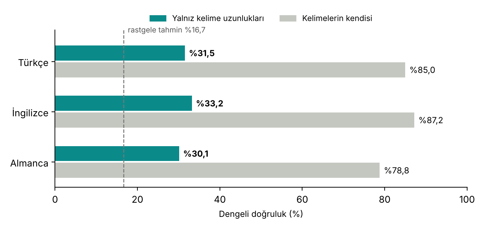

Kelimelerin Anlamına Bir de Böyle Bakalım – 2: Fikir Test Edildi
Bu yazı hakkında: Ana fikir ve 2021’deki ilk çalışma Ahmet Çandöken’e aittir. Bu ikinci bölümdeki test, analiz, istatistikler ve yazının metni, onun isteği ve yönlendirmesiyle Anthropic’in yapay zekâ modeli Claude tarafından hazırlandı.
2021'de ilk yazıda bir fikir ortaya atmıştım, ama onu sınama imkânım olmamıştı. Bu kez Claude’dan fikri test etmesini istedim. Kısaca sonuç şu: Kelime uzunlukları, okumadan da bir metnin konusu hakkında gerçek bir ipucu veriyor. Üç dilde de tahmin başarısı şansın yaklaşık iki katına çıkıyor. Ama "kısa kelime bilimsel, uzun kelime felsefi" diye bir kural çıkmadı.
Fikir neydi?
Homo Deus'u okurken gözüm yorulunca sayfa bulanıklaşmıştı. Yazı koyu bloklar ve boşluklardan oluşan bir örüntüye dönmüş, boşluklar aşağıdan yukarıya dallanan bir yapı çiziyordu. Kısa kelimelerde dallanma daha dikey, uzun kelimelerde daha yatay görünüyordu.
Buradan bir varsayım çıkardım: kısa kelimeli metinler daha bilimsel, uzun kelimeli metinler daha felsefi olabilir. Birçok metin test edilirse konulara göre ortak bir şablon çıkar mı diye merak ettim. Bunun için Processing'de metni kelime uzunluklarına göre çizen bir program yazdım, ama geniş bir test yapamadım.
Nasıl test edildi?
Adil bir karşılaştırma için üç dilde de aynı konular, aynı makaleler ve aynı miktarda metin kullanıldı.
- Diller: Türkçe, İngilizce, Almanca. Almanca, uzun bileşik kelimeleri yüzünden ayrı bir kontrol oldu.
- Kategoriler: Felsefe, bilim (fizik, kimya, biyoloji), din, edebiyat, ekonomi, spor.
- Metinler: Wikipedia'nın "temel makaleler" listesinden, üç dilde de bulunan makaleler. Her kategoriden 94 makale alındı. Böylece her dilde aynı 564 konu, toplam 1692 metin oldu.
- Eşitleme: Metinler 200 kelimelik parçalara bölündü. Her dil-kategori hücresinde tam 128 parça var. Sınırı Türkçe belirledi, çünkü Türkçe makaleler daha kısa.
Metinlerin anlamına hiç bakılmadı. Her parçadan yalnızca kelime uzunluklarının dağılımı, kelimelerin sırası ve dallanma ölçüldü. Dallanma için metin 60 karakter genişliğinde satırlara dizildi ve her boşluğun alt satırdaki en yakın boşluğa yatay uzaklığı ölçüldü. Bu, ilk yazıdaki gözlemin sayıya dökülmüş hâli. Sonra bir model, yalnızca bu ölçülerle parçanın hangi kategoriden geldiğini tahmin etti. Model hiç görmediği makalelerde sınandı. Altı kategoride rastgele tahminin başarısı %16,7.
Karşılaştırma için aynı tahmin bir de kelimelerin kendisi okunarak yapıldı. İki de kontrol eklendi. Biri etiketleri karıştırmak: bu durumda modelin şans düzeyine düşmesi gerekir. Öteki kelimeleri parça içinde karıştırmak: böylece sıranın katkısı ayrı görülüyor.
Kelime uzunluğu konuyu ele veriyor mu?
Evet, ama kısmen. Üç dilde de yalnız biçim bilgisiyle doğru tahmin %30–33 arasında, yani şansın yaklaşık iki katı.

Kelimeleri okuyan model %79–87'ye çıkıyor. Yani içeriğin asıl taşıyıcısı yine kelimelerin kendisi, kelime uzunluğu ise kaba bir ön eleme kadar bilgi veriyor. Etiketlerin karıştırıldığı kontrolde başarı %14–19'a, yani şans düzeyine düştü. Bu da bulunan sinyalin tesadüf olmadığını gösteriyor. Türkçe haberlerle (TTC-3600) yapılan ilk denemede de sonuç aynıydı: biçimle %29, kelimelerle %86.
Bilim mi kısa kelimeli, felsefe mi?
Asıl varsayımımın yönü metne göre değişiyor. Bilimle felsefe biraz ayrışıyor, ama hangisinin kelimeleri daha uzun, o sabit değil.
| Derlem | Bilim | Felsefe | Fark anlamlı mı? | Yalnız biçimle ayırma |
|---|---|---|---|---|
| Türkçe Wikipedia | 6,60 | 6,70 | Hayır | %68 |
| İngilizce Wikipedia | 5,20 | 5,42 | Evet, felsefe daha uzun | %62 |
| Almanca Wikipedia | 6,45 | 6,40 | Hayır | %64 |
| İngilizce Brown (kitap, dergi) | 4,99 | 4,76 | Evet, bilim daha uzun | – |
Ortalama kelime uzunluğu, harf/kelime. Ayırmada rastgele tahmin %50.
Son satır ilk denemeden. Brown derlemi kitaplardan, dergilerden ve denemelerden oluşuyor ve orada bilimsel metinlerin kelimeleri daha uzundu. Wikipedia'da ise İngilizcede tersi çıktı, Türkçe ve Almancada fark yok.
Buna rağmen model bilimle felsefeyi üç dilde de şansın üstünde ayırabiliyor. Demek ki fark ortalama uzunlukta değil, kelime uzunluklarının dağılımında. Her dilde en kolay tanınan kategori spor çıktı. Spor metinlerinin kelimeleri her dilde kendi dilinin ortalamasından kısa.
Dallanma ve kelime sırası
Gözlemim doğruymuş, ama dallanma ayrı bir bilgi taşımıyor. Kelimeler uzadıkça boşluklar gerçekten yataylaşıyor. Uzunlukla dallanma arasındaki ilişki Türkçede 0,27, İngilizcede 0,35, Almancada 0,64.
Yine de dallanma ölçüsü tek başına kullanılınca neredeyse hiçbir şey bilmiyor: model Türkçede %14, İngilizcede %21, Almancada %18 başarı gösteriyor. Gözün yakaladığı desen, kelime uzunluğunun görsel bir gölgesi. Satır kırılmalarının rastgeleliği de o gölgeyi bulanıklaştırıyor.
Kelimelerin sırası da az katkı yapıyor. Kelimeleri parça içinde karıştırınca başarı Türkçede 2,3 puan, Almancada 1,5 puan düşüyor, İngilizcede hiç düşmüyor. Bilgi büyük ölçüde kısa ve uzun kelimelerin oranında, nasıl dizildiklerinde değil.
Diller arası ortak şablon var mı?
Zayıf da olsa var. Model bir dilde eğitilip başka bir dilde sınandı. Bir dilden öğrenilen şablon öteki dilde %21 ile %26 arasında tutuyor. Aynı dil içinde bu oran %30–33, şans ise %16,7. Yani konuların dilden bağımsız küçük bir "biçim imzası" var, ama şablonun çoğu dile özgü.
Sonuç
Savunduğum şeyin bir karşılığı var, ama sandığım biçimde değil.
- Doğru çıkan: Bir metne okumadan, yalnızca kelime uzunluklarının desenine bakarak konusu hakkında kaba bir tahmin yapılabiliyor. Bu üç dilde de tutarlı ve tesadüf değil.
- Doğru çıkan: Kısa kelimeler dikey, uzun kelimeler yatay dallanma yaratıyor.
- Tutmayan: "Kısa kelime bilimsel, uzun kelime felsefi" kuralı. Yön derleme, dile ve yazım türüne göre değişiyor.
- Tutmayan: Dallanma görüntüsünün kelime uzunluğundan fazla bir şey söylemesi.
En ilginç bulgu iki deneyin farkı. Kitap ve dergilerde (Brown) bilimle deneme arasındaki fark belirgindi. Aynı ansiklopedik üslupla yazılmış Wikipedia'da fark küçülüyor. Kelime uzunluğu konudan çok yazış biçimini, yani metnin hangi üslupla yazıldığını yansıtıyor gibi. Bu, 1887'de Mendenhall'ın yazarları kelime uzunluğu eğrileriyle ayırmaya çalıştığı stilometri geleneğiyle de uyumlu.
Sınırlar: Wikipedia'da bütün kategoriler aynı üslupla yazılıyor. Bu, yalnızca konunun etkisini ölçmek için iyi, ama Homo Deus gibi kitapları temsil etmiyor. Bir sonraki adım üç dilde felsefe ve bilim kitaplarıyla aynı testi yapmak olabilir. Ayrıca bu ölçüm satır genişliğini sabit 60 karakter aldı. Gerçek sayfa düzeni ve yazı tipi dallanma görüntüsünü değiştirebilir.
Makale, kod ve veriler
Çalışmanın ayrıntılı hâli, tablolarla birlikte makale olarak Zenodo'da: doi.org/10.5281/zenodo.24440619. Makaleyi buradan da indirebilirsiniz: PDF. Kayıtta analiz kodları, sonuç dosyaları, kullanılan makalelerin listesi ve 2021'deki Processing programı da var. Metin CC BY 4.0, kodlar MIT lisanslı. Yasa dışı herhangi bir işte kullanmamak koşuluyla istediğiniz gibi kullanabilirsiniz.
Fikir ve 2021 programı: Ahmet Çandöken. Veri toplama, analiz, istatistik testleri ve bu yazının metni: Claude (Anthropic), Ahmet Çandöken’in yönlendirmesiyle. Sonuçlar hakemli bir incelemeden geçmedi.